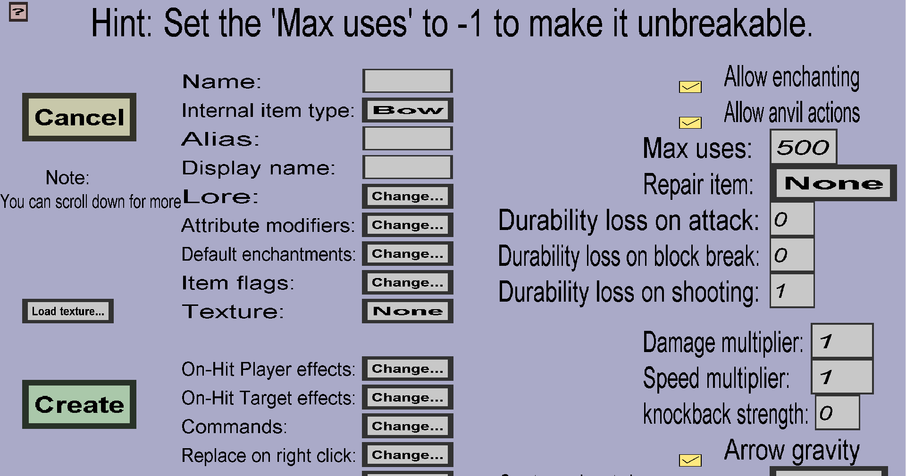

The bow edit menu can be used to create or edit custom bows. If you just started creating a new bow, it should look like this:
This menu has almost everything the tool edit menu has, but more. Contrary to the tool edit menu, this menu does not allow a custom model. That feature was left out because bows have completely different models and didn't seem very relevant (I think almost nobody would use it). Also, custom bows need Bow textures instead of normal textures. Make sure you have loaded the bow texture into the editor before you start filling in the other properties of the custom bow. For more information about bow textures, see the bow texture edit menu. You can reach it from the texture overview.
This is the durability the bow will lose each time players with arrows with it. See the 'Max uses' section of the tool edit menu for more info about durability.
The damage multiplier affects the damage dealt by arrows shot with custom bows. The damage dealt will be equal to the product of the Damage multiplier and the damage that would have been dealt if the arrow was shot by a normal bow. The damage multiplier must be a positive number (not necessarily an integer) and the default value will be 1.0, which means this custom bow will deal just as much damage as normal bows.
The speed multiplier affects the speed of arrows shot with this custom bow right after they are fired. The starting speed of arrows shot with this custom bow will be equal to the product of the Speed multiplier and the speed the arrow would have if it would have been fired by a normal bow. The speed multiplier must be a positive number (doesn't have to be an integer) and the default value will be 1.0, which means arrows shot by this custom bow will fly just as fast as arrows fired with normal bows.
Note that arrows with more speed will also deal more damage, so increasing the Speed multiplier will indirectly increase the damage dealt as well.
The knockback strength determines how far targets (mobs or players) will be knocked back when they are hit by an arrow fired with this custom bow. The effective punch enchantment level of the custom bow will be the sum of the actual punch enchantment level (0 when it's not enchanted) plus the Knockback strength you give the custom bow.
If you leave the Knockback strength 0, the custom bow will give the same knockback as a normal bow (with the same enchantments as the custom bow). If you take a Knockback strength of for instance 2, an unenchanted custom bow in-game will give the same knockback as a normal with the Punch enchantment at level 2. If the custom bow would have the Punch enchantment at level 1, it would give the same knockback as a normal bow with the Punch enchantment at level 3.
The arrow gravity determines whether arrows fired by this custom bow will be affected by gravity. If you keep it checked, arrows fired with this bow will experience gravity the same way as arrows fired by normal bows. If you uncheck it, arrows fired with this custom bow will ignore gravity completely (they will fly in a straight line). Note that they will still be affected by friction, which means that they will slow down eventually and 'hang' in the air if they don't hit anything.